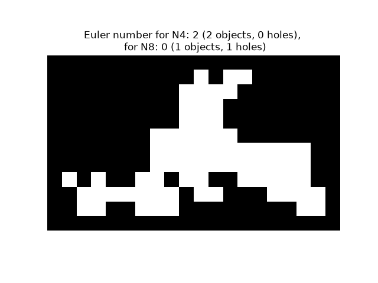
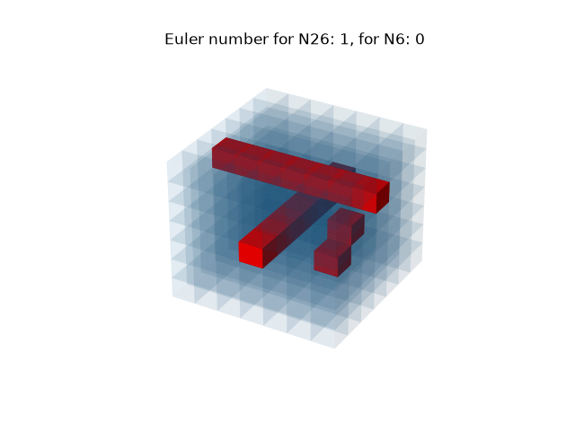

Note
Go to the end to download the full example code or to run this example in your browser via Binder
Euler number#
This example shows an illustration of the computation of the Euler number [1] in 2D and 3D objects.
For 2D objects, the Euler number is the number of objects minus the number of
holes. Notice that if a neighborhood of 8 connected pixels (2-connectivity)
is considered for objects, then this amounts to considering a neighborhood
of 4 connected pixels (1-connectivity) for the complementary set (holes,
background) , and conversely. It is also possible to compute the number of
objects using skimage.measure.label(), and to deduce the number of holes
from the difference between the two numbers.
For 3D objects, the Euler number is obtained as the number of objects plus the number of holes, minus the number of tunnels, or loops. If one uses 3-connectivity for an object (considering the 26 surrounding voxels as its neighborhood), this corresponds to using 1-connectivity for the complementary set (holes, background), that is considering only 6 neighbors for a given voxel. The voxels are represented here with blue transparent surfaces. Inner porosities are represented in red.
from skimage.measure import euler_number, label
import matplotlib.pyplot as plt
import numpy as np
# Sample image.
SAMPLE = np.array(
[
[0, 0, 0, 0, 0, 0, 0, 0, 0, 1, 0, 1, 1, 0, 0, 0, 0, 0],
[0, 0, 0, 0, 0, 0, 0, 0, 1, 1, 1, 1, 0, 0, 0, 0, 0, 0],
[0, 0, 0, 0, 0, 0, 0, 0, 1, 1, 1, 0, 0, 0, 0, 0, 0, 0],
[0, 0, 0, 0, 0, 0, 0, 0, 1, 1, 1, 0, 0, 0, 0, 0, 0, 0],
[0, 0, 0, 0, 0, 0, 1, 1, 1, 1, 1, 1, 0, 0, 0, 0, 0, 0],
[0, 0, 0, 0, 0, 0, 1, 1, 1, 1, 1, 1, 1, 1, 1, 1, 1, 0],
[0, 0, 0, 0, 0, 0, 1, 1, 1, 1, 1, 1, 1, 1, 1, 1, 1, 0],
[1, 0, 1, 0, 0, 1, 1, 0, 1, 1, 0, 0, 1, 1, 1, 1, 1, 0],
[0, 1, 1, 1, 1, 1, 1, 1, 0, 1, 1, 0, 0, 0, 1, 1, 1, 1],
[0, 1, 1, 0, 0, 1, 1, 1, 0, 0, 0, 0, 0, 0, 0, 0, 1, 1],
]
)
SAMPLE = np.pad(SAMPLE, 1, mode='constant')
fig, ax = plt.subplots()
ax.imshow(SAMPLE, cmap=plt.cm.gray)
ax.axis('off')
e4 = euler_number(SAMPLE, connectivity=1)
object_nb_4 = label(SAMPLE, connectivity=1).max()
holes_nb_4 = object_nb_4 - e4
e8 = euler_number(SAMPLE, connectivity=2)
object_nb_8 = label(SAMPLE, connectivity=2).max()
holes_nb_8 = object_nb_8 - e8
ax.set_title(
f'Euler number for N4: {e4} ({object_nb_4} objects, {holes_nb_4} '
f'holes), \n for N8: {e8} ({object_nb_8} objects, '
f'{holes_nb_8} holes)'
)
plt.show()

3-D objects#
In this example, a 3-D cube is generated, then holes and tunnels are added. Euler number is evaluated with 6 and 26 neighborhood configuration. This code is inpired by https://matplotlib.org/devdocs/gallery/mplot3d/voxels_numpy_logo.html
def make_ax(grid=False):
ax = plt.figure().add_subplot(projection='3d')
ax.grid(grid)
ax.set_axis_off()
return ax
def explode(data):
"""visualization to separate voxels
Data voxels are separated by 0-valued ones so that they appear
separated in the matplotlib figure.
"""
size = np.array(data.shape) * 2
data_e = np.zeros(size - 1, dtype=data.dtype)
data_e[::2, ::2, ::2] = data
return data_e
# shrink the gaps between voxels
def expand_coordinates(indices):
"""
This collapses together pairs of indices, so that
the gaps in the volume array will have a zero width.
"""
x, y, z = indices
x[1::2, :, :] += 1
y[:, 1::2, :] += 1
z[:, :, 1::2] += 1
return x, y, z
def display_voxels(volume):
"""
volume: (N,M,P) array
Represents a binary set of pixels: objects are marked with 1,
complementary (porosities) with 0.
The voxels are actually represented with blue transparent surfaces.
Inner porosities are represented in red.
"""
# define colors
red = '#ff0000ff'
blue = '#1f77b410'
# upscale the above voxel image, leaving gaps
filled = explode(np.ones(volume.shape))
fcolors = explode(np.where(volume, blue, red))
# Shrink the gaps
x, y, z = expand_coordinates(np.indices(np.array(filled.shape) + 1))
# Define 3D figure and place voxels
ax = make_ax()
ax.voxels(x, y, z, filled, facecolors=fcolors)
# Compute Euler number in 6 and 26 neighborhood configuration, that
# correspond to 1 and 3 connectivity, respectively
e26 = euler_number(volume, connectivity=3)
e6 = euler_number(volume, connectivity=1)
plt.title(f'Euler number for N26: {e26}, for N6: {e6}')
plt.show()
# Define a volume of 7x7x7 voxels
n = 7
cube = np.ones((n, n, n), dtype=bool)
# Add a tunnel
c = int(n / 2)
cube[c, :, c] = False
# Add a new hole
cube[int(3 * n / 4), c - 1, c - 1] = False
# Add a hole in neighborhood of previous one
cube[int(3 * n / 4), c, c] = False
# Add a second tunnel
cube[:, c, int(3 * n / 4)] = False
display_voxels(cube)

Total running time of the script: (0 minutes 0.665 seconds)